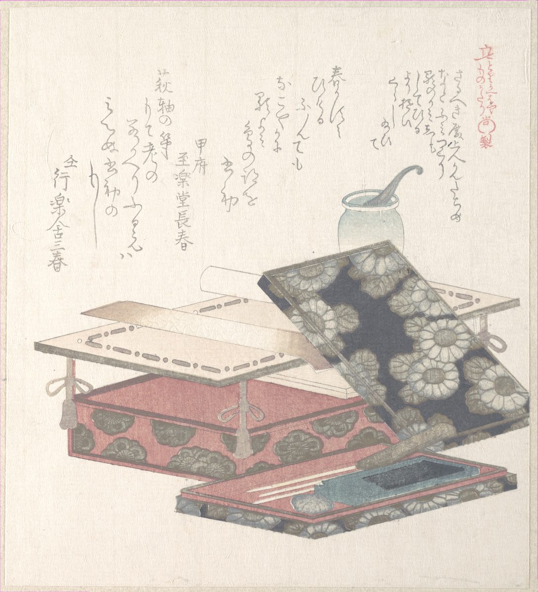

- База знаний
- Практики
- Основные практики
- Кит (kit)
Практика·20 минут·без меня·основная
Кит (kit): набор под состояние
Вещи, место и звук под одно состояние: собрал кит — легче войти в роль, разобрал — легче выйти. Не всегда получается, поэтому есть неделя проверки. Силу воли я у себя так и не нашла (искала), зато заметила, что в одни места и предметы я вхожу как в работу, а в другие — как в диван. Кит — это когда такой набор собираешь нарочно.
На чём стоитПривычки и средаумереннаяДизайн средыранняяОдежда задаёт состояниеспорнаяПривычки и среда: студенты и взрослые без расстройств; привычки питания, спорта, транспортаметки проверены 26.10.2026Почему так
Привычки и среда умеренная обзор
Что привычку запускает обстановка (то же место, время, предметы), показано много раз, но в основном в наблюдениях и опросах; при переезде привычки и правда ломаются. Программ, построенных на этой идее, проверено мало, и эффект у них скромный.
Исследование: Wood, Tam, Witt, 2005; Gardner и соавт., 2011 · на ком проверяли: студенты и взрослые без расстройств; привычки питания, спорта, транспорта
Дизайн среды ранняя мета-анализ
Мета-анализ 2022 года нашёл средний эффект «подталкиваний», а повторный анализ с поправкой на неопубликованные неудачи — почти нулевой средний эффект при большом разбросе: одни приёмы работают, другие нет.
Исследование: Mertens и соавт., 2022; критика: Maier и соавт., 2022 · на ком проверяли: очень разные группы взрослых, в основном без расстройств
Одежда задаёт состояние спорная эксперименты
Исходный эффект «халат врача улучшает внимание» не повторился в предрегистрированной проверке; ранние работы этого направления держатся слабо. Поэтому про «ту самую толстовку» говорю как про язык, не как про науку.
Исследование: Burns и соавт., 2019 (повторная проверка Adam, Galinsky, 2012) · на ком проверяли: студенты, лабораторные задачи
Метка говорит, насколько исследован метод, а не как он сработает у тебя. Что значат метки

- На руках
- Карточка одного кита: состояние, место, три-пять предметов, звук, вход и выход. И честное имя у одного кита, который работает не туда.
- Откуда
- кит собирается из того, что уже есть, покупать ничего не надо. Бывают киты, которые отлично работают, только не туда; их разбираем так же, без стыда.
- Это упражнение
- придумано вместе с Юрой, первым участником программы.
- В «Переходе»
- это неделя 9: опоры — люди, ритм, ритуал и аптечка на плохой день. Кит собираем после карты опор, потому что среду поменять проще всего.
Зачем кит
Слово kit по-английски — набор: аптечка, набор для похода, стартовый набор. В самопомощи есть похожая идея — коробка, которую собирают заранее, чтобы в тяжёлую минуту не думать, а открыть. Наш кит — тот же принцип, только не на плохой день (про него у меня отдельно — «Аптечка на стену»), а на каждый: набор под любое состояние, в которое хочется входить по кнопке.
Ритуал — это одно действие с началом и концом. Аптечка — что делать, когда уже плохо. Кит — то, что лежит вокруг, пока ты ещё ничего не делаешь: вещи, место, звук, одежда. Он не требует решения в моменте, в этом его сила: ноутбук в рюкзаке и наушники на шее для многих людей работают как сигнал: сейчас будем работать.
У каждого уже есть свои киты, просто не названы. Один, скорее всего, включает нужное состояние: в этой куртке ты идёшь гулять, за этим столом думаешь. И почти наверняка есть один, который включает ненужное, и включает надёжно, без промаха. Практика про то, чтобы первый собрать нарочно, а второй разобрать без стыда.
- Состояние или роль. Выбери одно: в него трудно входить или из него трудно выходить. Работать головой, двигаться, восстанавливаться, думать и писать, разговаривать с людьми, заканчивать день. Одно, не три.
- Когда оно включалось само. Вспомни два-три раза, когда ты в нём оказывался без усилия. Что было вокруг: место, время суток, кто рядом, что в руках. Это и есть детали будущего кита, их не надо придумывать.
- Предметы. Три-пять вещей, не больше, чтобы кит собирался за минуту и в плохой день. Всё из того, что уже есть. Если тянет что-то купить, сначала собери из имеющегося и проверь неделю.
- Место и дом кита. Где кит работает (стол у окна, кофейня, парк, коврик у стены) и где он живёт, когда не нужен: у двери, в рюкзаке, в одной коробке. Кит, разложенный по квартире, собирать не хочется.
- Звук, свет, запах, одежда. Что ещё помогает телу поверить: один и тот же плейлист, настольная лампа вместо верхнего света, та самая толстовка. Одной-двух деталей хватает.
- Вход и выход. Первое движение, с которого кит включается (надеть наушники, налить воду), и последнее, которым выключается (убрать в коробку, снять часы). Без выхода кит растекается на весь день, и рабочий стол превращается в место, где ты и работаешь, и не можешь перестать.
- Неделя проверки. Собери кит хотя бы три раза за неделю. Включил состояние — оставляй. Не включил — поменяй одну деталь: место, время или предмет. Чиним кит, а не себя.
Если не получается начать. Назови один кит, который у тебя уже есть и работает: хоть в нужную сторону, хоть нет. Или нажми «Пример».
Кит, который работает не туда
Подозреваю, что такой у тебя есть: он собирается сам, в одно и то же время, из одних и тех же вещей, и после него не легче, а чуть стыднее. Телефон на зарядке у кровати плюс лента плюс «ещё пять минут» — кит, собранный лучше любого рабочего.
Хорошая новость: раз он работает, ты умеешь собирать киты. Плохой новости нет, есть пара ходов.
- Назови его. Из чего он состоит: место, предметы, время, вход. Обычно оказывается, что вход у него один: взять в руки, сесть, открыть.
- Не ломай, разнеси. Не «больше никогда», а «добавить один шаг»: зарядка в другой комнате, приложение на третьем экране, пульт в ящике. Кит, который надо собирать, уже не собирается сам.
- Подставь другой кит на тот же вход. Если вход — «сесть на диван вечером», пусть на диване лежит книга и плед, а телефон живёт на кухне. Место остаётся, состав меняется.
- Проверь неделю, как и любой кит. Разобрался не до конца — нормально, разнеси ещё одну деталь.
Стыдить себя за такой кит бессмысленно: он собрался по тем же законам, что и рабочий, просто его никто не проектировал. Теперь проектируешь ты.
Если не пошло
- Кит не включает состояние три раза подряд — скорее всего, не та деталь держит. Поменяй место или время, предметы обычно не главное.
- Кит включает, но собирать лень — он живёт слишком далеко или в нём больше пяти вещей.
- Кит работает только в одном месте, а место пропало (переезд, кафе закрылось) — опиши, что оно давало: «утро, пока никого, и большой стол», и ищи это, а не точный адрес.
- Хочется собрать сразу пять китов — собери один и проверь неделю. Остальные никуда не денутся.
Из «Карты опор» кит берёт детали: место, время, вещи. Ритуал встаёт внутрь кита как вход или выход: три вдоха у окна — ритуал, а стол у окна, лампа и наушники — кит. Аптечка — это на плохой день, когда думать не получается; кит собирается в спокойный и нужен каждый день. Если кит есть, ритуалу есть где начаться.
Рядом
Заметили ошибку или устаревшее — напишите в Telegram.
Каждую практику можно сделать без меня. В «Переходе» я подбираю их под тебя, и найденное складывается в выбор дела и первый шаг. Как устроен «Переход» →